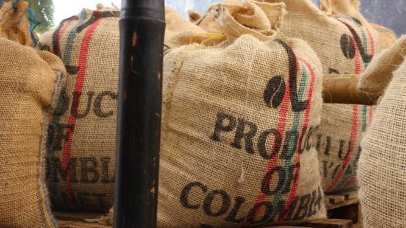

Más de un factor
Una economía no produce solo con trabajo. También utiliza capital, tierra y otros factores.
Economía Internacional
Profesor Mg. William Alexander Aguirre Antolínez
Dos ejemplos que ilustran la teoría de proporciones factoriales

Factor proportion theory
Una economía no produce solo con trabajo. También utiliza capital, tierra y otros factores.
El comercio entre países depende de la proporción de factores disponibles en cada uno.
Un país exporta los bienes que usan intensivamente el factor que es abundante en su economía.
Trabajo y capital como factores de producción
Dos visiones según la sustituibilidad de factores
Izquierda: con coeficientes fijos de factores, la FPP tiene un vértice (envolvente de las dos restricciones lineales).
Derecha: cuando los factores son sustituibles, la FPP se suaviza y se convierte en una curva cóncava al origen.
Rectas isovalor y maximización del valor
El productor busca maximizar el valor de su producción: V = PA·QA + PT·QT.
Las rectas isovalor tienen pendiente −PT/PA. Como la FPP es cóncava, la recta isovalor más alta posible toca la curva en un único punto Q.
En ese punto Q la economía produce la combinación de bienes que maximiza su valor dado el precio relativo.
Diagrama de caja: trabajo y tierra entre dos sectores
El diagrama de caja muestra cómo se reparten trabajo y tierra entre los dos sectores (tela y alimentos).
La línea A (alimentos) es más empinada porque ese sector es intensivo en tierra. La línea T (tela) es más plana. Se cruzan en el punto de equilibrio 1.
La asignación depende de la intensidad factorial de cada bien y de la dotación de factores del país.
Comercio internacional y equilibrio
DA: Demanda del bien A · DB: Demanda del bien B